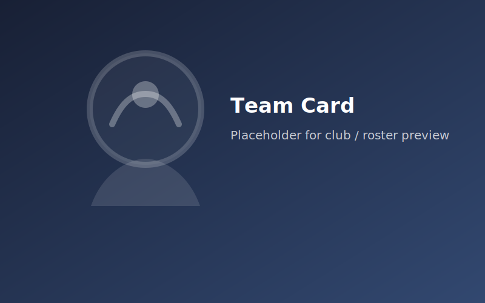

About this template pack
A clean front-end starter for sports and esports news projects.
This template was built as a teaching pack: semantic HTML, CSS variables, reusable cards, responsive layouts, and vanilla JavaScript interactions. Students can first study the static version, then convert it to Django templates (`base.html`, includes, `{% block %}` sections).
Branding uses Sport News intentionally so the template can be reused in class projects without project-specific names.
Django Integrator
Content Editor
FAQ (accordion demo)
Create `base.html`, move CSS/JS into `static/`, replace repeated header/footer with `{% include %}`, and render cards in `{% for item in page_obj %}` loops.
Yes. Every JS module checks if matching selectors exist. Remove unused markup and the corresponding feature will simply not run.
To keep the learning path simple: HTML/CSS/JS first, then backend integration. No build tools are required.